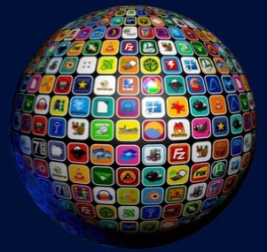
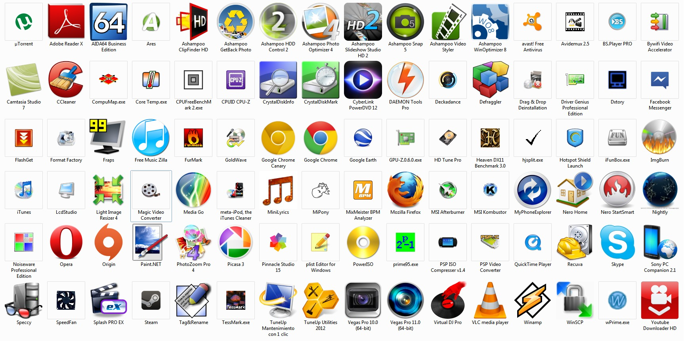

SOFTWARE APLICATIVO Y SOFTWARE DESARROLLO
¿Qué es el software aplicativo?
Hablar de software de aplicación puede parecer confuso para
algunos, incluso redundante, pero se debe aclarar un detalle
importante para poder entenderlo mejor. El software de aplicación
es, básicamente, el software que está dirigido al usuario. Dentro
de todo lo que el software engloba (sin contar videojuegos o el
software usado en páginas web), podemos hacer una división y
separarlo en dos grandes grupos: uno sería el software de
aplicación y otro el software del sistema. La diferencia principal
entre uno y otro es que, como ya mencionábamos, el software de
aplicación es el que los usuarios utilizan, mientras que el
software del sistema son programas y scripts utilizados únicamente
por el sistema operativo de nuestro dispositivo, y no está
orientado para ser utilizado por usuarios. Ya que el software de
aplicación es el que está orientado para que usemos las personas,
podemos encontrar una infinidad de programas ahí fuera. La lista
sería realmente interminable pues no solamente existen muchísimos
programas orientados al usuario, sino que además constantemente
están saliendo nuevos. En muchas ocasiones el software de
aplicación suele venir incluido, o también podemos decir
pre-instalado, en nuestro dispositivo. Tales casos podrían ser por
ejemplo el caso de navegadores como Google Chrome en teléfonos
móviles Android, o herramientas como Word en el caso de Windows si
ya cuenta con un paquete de Office.

Clasificación del software aplicativo
La clasificación del software de aplicación queda de al siguiente
manera:
-
Aplicaciones de Sistema de control y automatización industrial.
- Aplicaciones ofimáticas
- Software educativo.
- Software médico.
- Software de Cálculo Numérico.
- Software de Diseño Asistido (CAD).
- Software de Control Numérico (CAM).
Características
La gran mayoría del software de aplicación cumple con una o varias
de las características que mencionamos a continuación:
Orientado al usuario: Como decíamos al comienzo, el
software de aplicación es todo aquél que está orientado al
usuario, por lo tanto que el usuario pueda utilizarlo es una de
las principales características que lo definen.
Gratuito: Otra característica que aplica al software de
aplicación, aunque cabe mencionar que no es universal al mismo, es
que se puede encontrar gratuitamente, también se le conoce como
freeware.
Hay software que de por sí es distribuido bajo una licencia libre
que permite que cualquier persona pueda usarlo, aunque también
existen aplicaciones que son distribuidas en forma pirata, que si
bien también se puede considerar “gratis”, su descarga y uso bajo
contra la ley y no es recomendado, no solo por lo mencionado sino
también porque el software pirata puede incluir virus y códigos
maliciosos.
De pago: Al igual que el caso anterior, existe mucho
software de aplicación que es de pago, es decir que se distribuye
bajo una licencia paga, aunque nuevamente no es una
características universal. Este tipo de software suele estar
disponible para descargar desde sitios oficiales, aunque se
necesita pagar una licencia para poder darle uso, o en algunos
casos directamente se debe pagar para poder descargarlo.
Pre-instalado: Gran cantidad de software suele venir
pre-instalado o incluso en los dispositivos que compramos. Por lo
general se trata de herramientas sencillas y que la mayoría de los
usuarios utiliza o puede necesitar en algún momento, aunque en
otras ocasiones también se ven aplicaciones que la mayoría de los
usuarios no requieren.
Disponible para instalar: Similar al punto anterior, mucho
software de aplicación puede ser bajado de Internet o instalado en
nuestros dispositivos por otros medios. Este tipo de software
suele ser bastante específico para el usuario que lo requiere, ya
que por lo general no se trata de software básico como podría ser,
por ejemplo, un procesador de texto.
Compatibilidad: Un detalle muy importante que debemos
tener en cuenta antes de poder instalar o usar una aplicación es
la compatibilidad de la misma con nuestro sistema operativo.
Si bien existe mucho software multiplataforma, es decir que corre
bajo distintos sistemas operativos, cabe mencionar que también
existen aplicaciones que están disponibles solo para un sistema
operativo en particular.
Hoy en día es algo un poco raro de ver, ya que la gran parte del
software está diseñado para ser compatible con muchos entornos
distintos, pero no deja de ser una característica con la que
cumplen muchas herramientas.
Requisitos de hardware: Existen aplicaciones que pueden
requerir de un cierto hardware en particular para funcionar
correctamente. Este tipo software suele ser utilizado para tareas
bastante particulares, como podría ser por ejemplo el renderizado
de videos o la emulación.
Tipos de software de aplicación
Aplicaciones de ofimática: son todas aquellas utilidades
informáticas que están diseñadas para tareas de oficina con el
objetivo de optimizar, automatizar y mejorar las tareas en esta
actividad.
Bases de datos: Colección de información digital de manera
organizada para que un especialista pueda acceder a fragmentos en
cualquier momento.
Videojuegos: Juegos electrónicos donde una o más personas
interactúan con imágenes de video a través de controles físicos o
movimientos corporales.
Software empresarial: Puede decirse que es toda aquella
aplicación que está creada para optimizar, automatizar o medir la
productividad de alguna industria o empresa.
Software educativo: Todos aquellos productos digitales que
tienen como objetivo enseñar algún tema en específico al usuario
de cualquier nivel y facilitar el proceso de aprendizaje.
Software de gestión: Sistema integrado por varias
herramientas para ser utilizado en tareas relacionadas con la
administración o el cálculo numérico.
Estos son los tipos de software de acuerdo a su clasificación. Sin
embargo, existe otro punto que es necesario explicar para
comprender cómo funcionan estos productos comercialmente.
Ejemplos de Software de Aplicación
Google Chrome: Es el navegador web más conocido y
utilizado del mundo. Nos permite acceder a nuestros sitios web
preferidos ya sea para informarnos, para entretenernos o bien para
trabajar. Millones de personas en todo el mundo lo usan cada día
para realizar toda clase de actividades en la web. Entre sus
principales competidores encontramos a Mozilla Firefox y a
Microsoft Edge (sucesor del conocido Internet Explorer de la misma
compañía).
Skype: Es uno de los programas de chat y video llamas más
utilizados a nivel mundial, contando con millones de usuarios que
lo usan para comunicarse cada día. Su uso está muy extendido en el
ámbito laboral y nos permite incluso realizar sesiones de chat y
video llamada entre varias personas.
Microsoft Word: Sin dudas se trata del procesador de texto
más utilizado a nivel mundial, así como uno de los programas que
más se usan a nivel de oficinas. Word nos permite realizar toda
clase de artículos y textos con muchos fines tanto a nivel laboral
como académico, incluso puede ser utilizado por escritores. Posee
una gran cantidad de funciones y extensiones que nos permiten
enriquecer mucho el trabajo que realicemos.
VLC Player: Es uno de los reproductores de software libre
para escuchar música y mirar video más usados del mundo. Su
interfaz sencilla de utilizar, su compatibilidad con gran cantidad
de formatos y el hecho de que sea un software gratuito y
multiplataforma lo han convertido en unos de los reproductores
multimedia más usados del mercado. Además cuenta con un gran
equipo de desarrollo que lo mejora constantemente.
Avast Antivirus: Es uno de los programas de detección y
eliminación de virus más utilizados del mercado. Posee tanto
versión gratuita como Premium, y esta última integra varias
funciones adicionales en comparación a la versión libre. Lo
listamos hace tiempo en nuestra lista de antivirus gratuitos para
Windows.
WhatsApp: Es una aplicación de mensajería orientada para
dispositivos móviles, aunque también es accesible en su versión
web si se prefiere una interfaz distinta. WhatsApp es la
aplicación de chat más usada a nivel mundial y en general una de
las aplicaciones más usadas del mundo.
uTorrent: Se trata de un programa utilizado para compartir
toda clase de contenido, incluso se puede ser para compartir otros
programas. Esta herramienta funciona mediante un sistema de
torrents, donde muchos usuarios comparten toda clase de contenido,
datos y programas entre sí.
Excel: Otro programa muy popular a nivel de oficinas y que
forma parte de la conocida suite Office de Microsoft. Se trata de
un software de hoja de cálculo que es muy utilizado en distintos
ambientes, tanto laboral como estudiantil.
Photoshop: Es el programa de diseño y manipulación de
imágenes por excelencia, siendo desde hace muchos años el más
usado del mundo en su rubro. El uso de Photoshop está tan
extendido que a menudo se dice que una imagen ha sido
“photoshopeada” en vez de modificada.
Steam: Es una plataforma de gestión y distribución de
videojuegos, la más usada del mundo en su sector. Millones de
jugadores de videojuegos de todo el globo la usan a diario para
poder descargar y jugar sus títulos preferidos.

¿Qué es el desarrollo de software?
El desarrollo de software se refiere a un conjunto de actividades
informáticas dedicadas al proceso de creación, diseño, despliegue
y compatibilidad de software.
El software en sí es el conjunto de instrucciones o programas que
le dicen a una computadora qué hacer. Es independiente del
hardware y hace que las computadoras sean programables. Hay tres
tipos básicos:

Software del sistema: Para proporcionar funciones
básicas como sistemas operativos, administración de discos,
servicios, administración de hardware y otras necesidades
operacionales.
Software de programación: Para brindar a los
programadores herramientas como editores de texto, compiladores,
enlazadores, depuradores y otras herramientas para crear código.
Software de aplicación (aplicaciones o apps) : Para
ayudar a los usuarios a realizar tareas. Las suites de
productividad de Office, el software de gestión de datos, los
reproductores multimedia y los programas de seguridad son
algunos ejemplos. Aplicaciones también se refiere a aplicaciones
web y móviles como las que se utilizan para comprar en
Amazon.com, socializar en Facebook o publicar imágenes en
Instagram.
Un posible cuarto tipo es el software integrado. El
software de sistemas integrado se utiliza para controlar máquinas
y dispositivos que normalmente no se consideran computadoras, como
redes de telecomunicaciones, automóviles, robots industriales y
más. Estos dispositivos, y su software, se pueden conectar como
parte del Internet de las Cosas (IoT).
El desarrollo de software lo llevan a cabo principalmente
programadores, ingenieros de software y desarrolladores de
software. Estos roles interactúan y se superponen, y la dinámica
entre ellos varía mucho entre los departamentos y comunidades de
desarrollo.
Los programadores, o codificadores: Escriben el código
fuente para programar computadoras para realizar tareas
específicas como fusionar bases de datos, procesar pedidos en
línea, enrutar comunicaciones, realizar búsquedas o mostrar
texto y gráficos. Los programadores suelen interpretar las
instrucciones de los desarrolladores e ingenieros de software y
utilizan lenguajes de programación como C++ o Java para
llevarlas a cabo.
Los ingenieros de software : Aplican principios de
ingeniería para crear software y sistemas para resolver
problemas. Utilizan lenguaje de modelado y otras herramientas
para idear soluciones que a menudo se pueden aplicar a problemas
de manera general, en lugar de simplemente resolver solo una
instancia o un cliente específico. Las soluciones de ingeniería
de software se adhieren al método científico y deben funcionar
en el mundo real, como con puentes o ascensores. Su
responsabilidad ha aumentado a medida que los productos se han
vuelto cada vez más inteligentes con la adición de
microprocesadores, sensores y software. No solo hay más
productos que dependen del software para diferenciarse de la
competencia en el mercado, sino que el desarrollo de su software
debe coordinarse con el trabajo de desarrollo mecánico y
eléctrico del producto.
Los desarrolladores de software Tienen un rol menos
formal que los ingenieros y pueden participar de cerca en áreas
específicas del proyecto, incluida la escritura de código. Al
mismo tiempo, impulsan el ciclo de vida general del desarrollo
de software mediante el trabajo en equipos funcionales para
transformar los requisitos en funciones, la gestión de equipos y
procesos de desarrollo y la realización de pruebas y
mantenimiento de software.
El trabajo del desarrollo de software no se limita a codificadores
o equipos de desarrollo. Profesionales como científicos,
fabricantes de dispositivos y fabricantes de hardware también
crean código de software, aunque no son principalmente
desarrolladores de software. Tampoco se limita a las industrias
tradicionales de tecnología de la información, como las empresas
de software o semiconductores. De hecho, según Brookings Institute
(enlace externo a ibm.com), esas empresas "representan menos de la
mitad de las empresas que realizan desarrollo de software".
Una diferencia importante es el desarrollo de software
personalizado, contrario al desarrollo de software comercial. El
desarrollo de software personalizado es el proceso de diseño,
creación, despliegue y mantenimiento de software para un conjunto
específico de usuarios, funciones u organizaciones. Por el
contrario, el software comercial listo para usar (COTS) está
diseñado para un amplio conjunto de requisitos, lo que permite
empaquetarlo, comercializarlo y distribuirlo.

Características principales del desarrollo de software eficaz
Usar el desarrollo de software para diferenciar marcas y ganar
ventaja competitiva requiere dominio de las técnicas y tecnologías
que pueden acelerar el despliegue, la calidad y la eficacia del
software.
Inteligencia artificial (IA):: La IA permite que el
software imite la toma de decisiones y el aprendizaje humanos.
Las redes neuronales, el machine learning, el procesamiento del
lenguaje natural y las capacidades cognitivas ofrecen a los
desarrolladores y empresas la oportunidad de ofrecer productos y
servicios que revolucionan los mercados y se adelantan a la
competencia. IBM Watson ofrece a los desarrolladores una forma
de conectarse y utilizar servicios de inteligencia artificial
como parte de sus aplicaciones a través de interfaces de
programación de aplicaciones o API. También puede utilizar IBM
Watson para mejorar los requisitos de su producto comprobando la
ambigüedad, actores poco claros, requisitos compuestos o
negativos, unidades o tolerancias faltantes, requisitos
incompletos y cantidades no específicas.
Desarrollo nativo de la nube: El desarrollo nativo de la
nube es una forma de crear aplicaciones para aprovechar los
entornos de la nube. Una aplicación nativa de la nube consta de
componentes discretos y reutilizables conocidos como
microservicios, diseñados para integrarse en cualquier entorno
de nube. Estos microservicios actúan como elementos básicos y a
menudo se empaquetan en contenedores. Debido a esta
arquitectura, las aplicaciones nativas de la nube pueden
utilizar entornos de nube para mejorar el rendimiento, la
flexibilidad y la extensibilidad de las aplicaciones.
Desarrollo basado en la nube: Así como las
organizaciones de TI utilizan la nube para mejorar la gestión de
recursos y reducir costos, también lo hacen las organizaciones
de desarrollo de software. De esta manera, la nube se puede
utilizar como un entorno de desarrollo integrado (IDE) rápido,
flexible y rentable o una plataforma como servicio (PaaS). Los
entornos de desarrollo basados en la nube pueden admitir
codificación, diseño, integración, pruebas y otras funciones de
desarrollo. También pueden ofrecer acceso a API, microservicios,
DevOps y otras herramientas, servicios y experiencia de
desarrollo.
Blockchain: Blockchain es un libro mayor seguro y
vinculado digitalmente que elimina el costo y la vulnerabilidad
generados por bancos, organismos reguladores y otros
intermediarios. Está transformando empresas al liberar capital,
acelerar procesos, reducir costos de transacción y más.
Blockchain presenta una gran oportunidad para el desarrollo de
software. Los desarrolladores están trabajando con libros
mayores distribuidos y tecnología Hyperledger (enlace externo a
ibm.com) de código abierto para cambiar la forma en que operan
las empresas.
Código bajo: Forrester define el código bajo como:
"Productos y/o servicios en la nube para el desarrollo de
aplicaciones que emplean técnicas visuales y declarativas en
lugar de programación, y están disponibles para los clientes a
un bajo costo o sin costo en cuanto a dinero y capacitación
(...)". 4 En resumen, es una práctica de desarrollo que reduce
la necesidad de codificar y permite a los no codificadores o
desarrolladores ciudadanos crear o ayudar a crear aplicaciones
rápidamente y a un costo menor.
Analítica: La demanda anual de científicos de datos,
desarrolladores de datos e ingenieros de datos llegó a casi
700,000 vacantes en 2020. La demanda destaca lo importante que
es para las empresas obtener insights y valor de los datos. En
consecuencia, los desarrolladores de software están integrando
funciones analíticas avanzadas en sus aplicaciones. Los
servicios basados en la nube y las API simplifican la tarea de
guiar la exploración de datos, automatizar la analítica
predictiva y crear paneles de control que brindan nuevos
insights y mejoran la toma de decisiones.
Ingeniería de sistemas basada en modelos (MBSE): En
MBSE, los lenguajes de modelado de software se utilizan para
realizar prototipos, simulaciones y análisis tempranos de
diseños de software para su validación temprana. La creación de
diseños en MBSE le ayuda a analizar y elaborar los requisitos
del proyecto y pasar rápidamente del diseño a la implementación.
Móvil: Muchas de estas experiencias ocurren en entornos
móviles. Una de las funciones principales de los desarrolladores
de software es la creación de aplicaciones móviles con
conexiones profundas a los datos que enriquecen y mejoran las
experiencias de los usuarios. Forrester ha descubierto que "la
integración profunda de los datos digitales/móviles de los
clientes tiene un fuerte impacto en la forma en que los clientes
interactúan con las marcas".